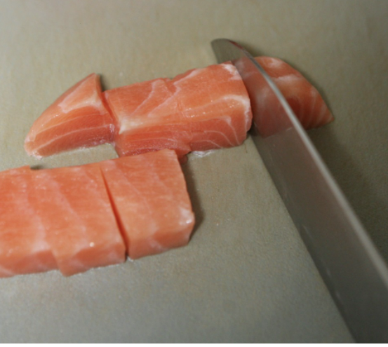

오늘의 레시피
연어포케
요리에 필요한 준비물
생연어155g, 밥 2/3공기, 오이 1/5, 양파 1/5, 황색 피망 1/6, 방울토마토 3/4, 와사비
생연어 양념 재료
양조 간장 1T, 쯔유 1T, 맛술 1T, 참기름 1T, 레몬즙 1T, 설탕 1t, 다진마늘 1t
요리 과정
첫 번째
연어를 155g을 준비한 다음에 키친타올로 연어 표면에 물기를 닦아 주고 큐브의 형태로 깍둑썰기를 해준다. (살짝 두께감이 있어야 식감이 살아납니다.)
두 번째
큐브형태로 짤라준 연어를 양념으로 버무리기 위하여 양조 간장 1T, 쯔유 1T, 맛술 1T, 참기름 1T, 레몬즙 1T, 설탕 1t, 다진마늘 1t를 넣고 간이 골고루 배도록 섞어준다. (양념된 연어를 냉장고에 넣어서 숙성시켜도 좋습니다.)

세 번째
어린 잎 새싹을 소독하기 위해 물로 가볍게 세척 후 물과 식초를 섞은 용액에 5분정도 담갔다가 꺼내어 흐르는 물에 씻고 물기를 털어냅니다. 양파는 채를 얇게 썬 후 물에 5분 정도 넣어 아린 맛을 빼줍니다. 오이는 소금으로 표면을 문질러서 세척을 한 다음 세로 혹은 가로로 얇게 썰어줍니다.

네 번째
재료 손질이 완료 되었습니다. 적당한 크기의 용기에 밥의 2/3공기 정도를 담고 위의 손질 한 방울토마토 오이, 황색 피망, 양파, 어린 잎 새싹 등의 재료들을 그릇의 테두리를 따라서 빙 둘러 배치를 해줍니다. 가운데에 미리 양념된 연어를 올려서 마무리 해줍니다.

다섯 번째
야채는 기호에 따라서 어울리는 야채를 넣어주시면 됩니다. (아보카도나 무순 등)
여섯 번째
플레이팅이 끝났습니다. 와사비를 자기 취향 껏 첨가하여서 비벼서 먹거나, 덮밥으로 먹거나 하면 됩니다.